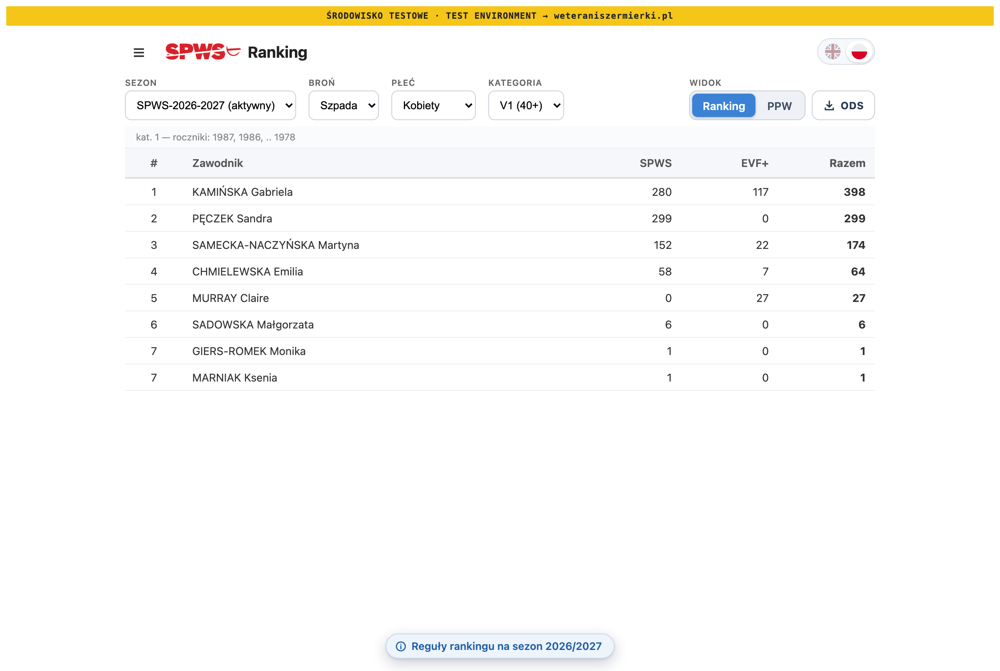
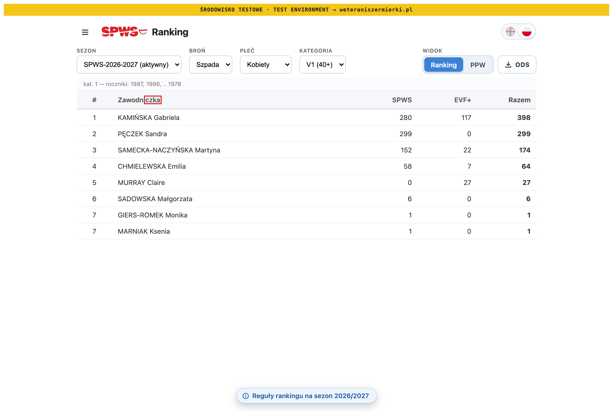
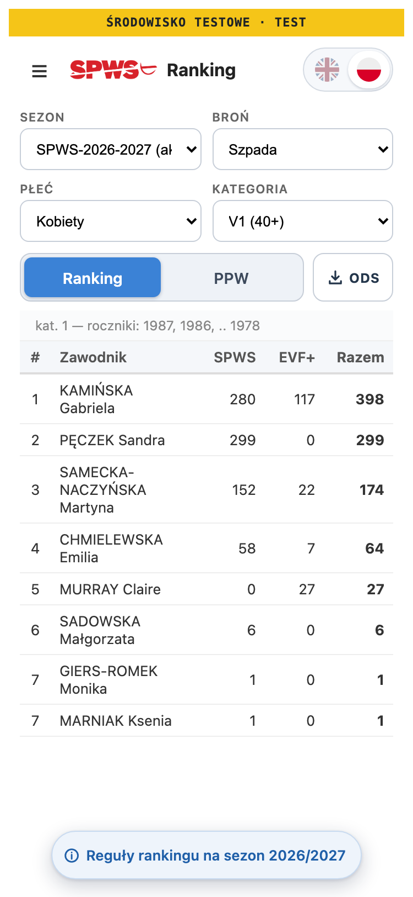
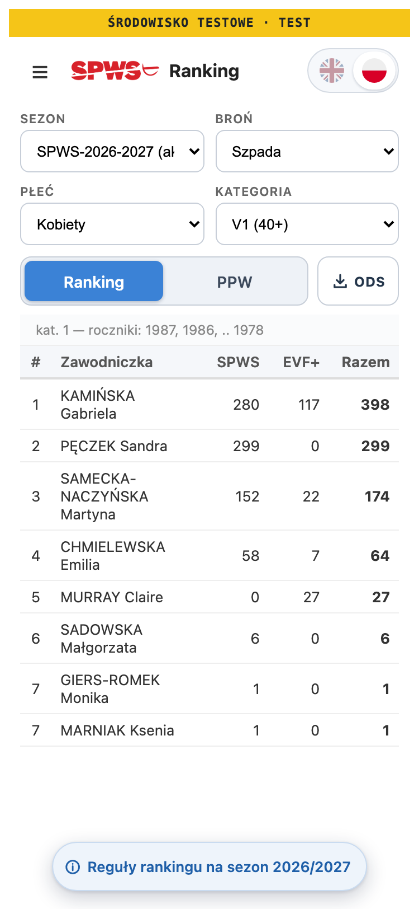
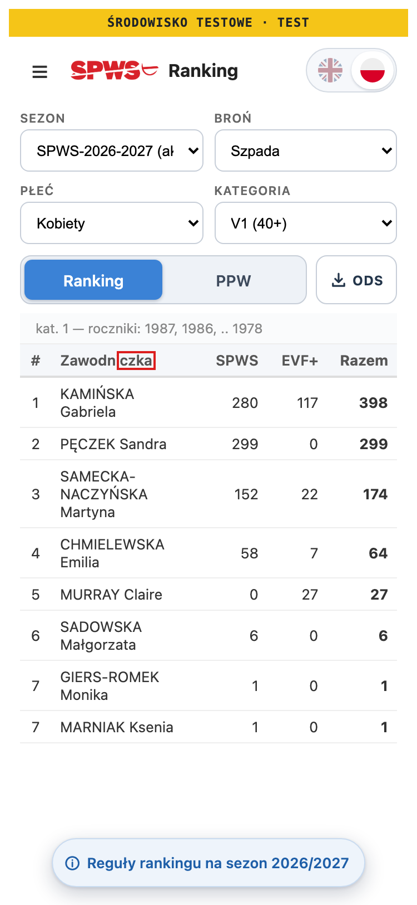
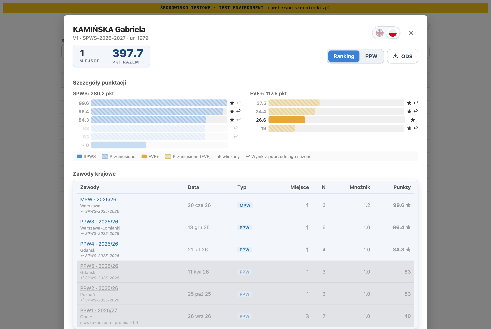
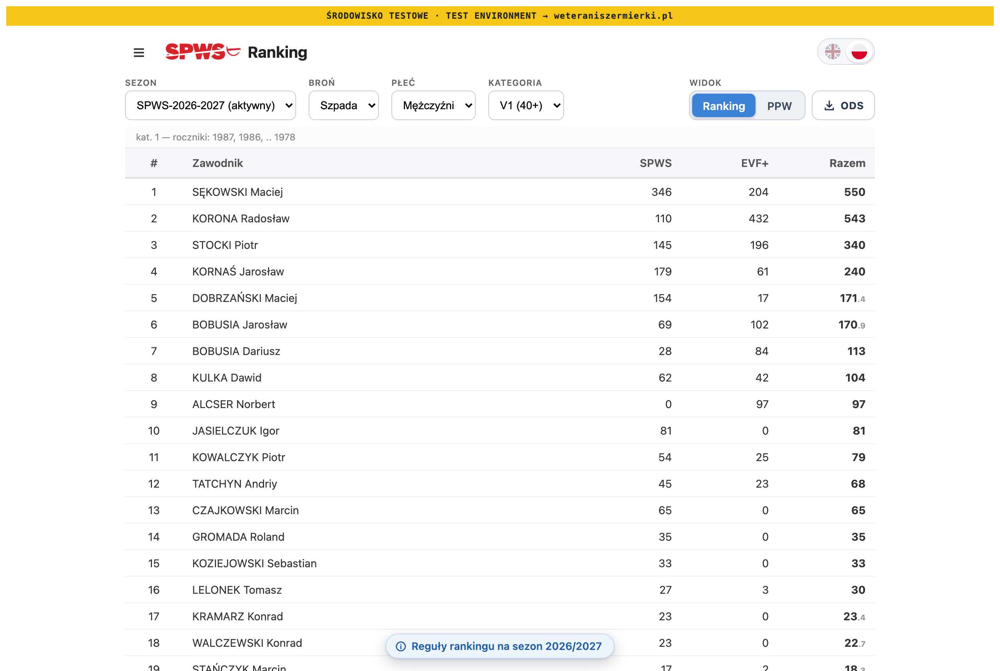

Front end · Ranklist + drill-down · Before / after
I took 14 screenshots before and after the change on LOCAL: both genders, both languages, desktop and phone, plus the drill-down. 12 are pixel-identical. The other 2, the Polish women's list on desktop and phone, differ only in the header word, now „Zawodniczka”.
1 · The two screenshots that changed
The page opens on the women's épée V1 list. Before the change, its header said „Zawodnik”. The red box on the third image marks every changed pixel: 748 on desktop and 632 on phone, all inside the header word. The column widths, the numbers and the rows did not move.





2 · The twelve that did not change
| Screenshot | Header text | Changed pixels |
|---|---|---|
| Men's list · Polish · desktop | Zawodnik | 0 |
| Men's list · Polish · phone | Zawodnik | 0 |
| Women's list · English · desktop | Fencer | 0 |
| Women's list · English · phone | Fencer | 0 |
| Men's list · English · desktop | Fencer | 0 |
| Men's list · English · phone | Fencer | 0 |
| Drill-down · women · Polish · desktop | — | 0 |
| Drill-down · women · Polish · phone | — | 0 |
| Drill-down · men · Polish · desktop | — | 0 |
| Drill-down · men · Polish · phone | — | 0 |
| Drill-down · women · English · desktop | — | 0 |
| Drill-down · men · English · desktop | — | 0 |
The drill-down looks the same because its only change is the ODS button's tooltip, which shows on hover. Section 3 has the tooltip texts, read from the page.


3 · The texts, read from the page
| Where | Before | After |
|---|---|---|
| Header · women · Polish | Zawodnik | Zawodniczka |
| Header · men · Polish | Zawodnik | Zawodnik |
| Header · both · English | Fencer | Fencer |
| ODS tooltip · women · Polish | Pobierz arkusz ODS z wynikami zawodnika (Excel, LibreOffice) | Pobierz arkusz ODS z wynikami zawodniczki (Excel, LibreOffice) |
| ODS tooltip · men · Polish | Pobierz arkusz ODS z wynikami zawodnika (Excel, LibreOffice) | Pobierz arkusz ODS z wynikami zawodnika (Excel, LibreOffice) |
| ODS tooltip · both · English | Download the fencer’s results as an ODS spreadsheet (Excel, LibreOffice) | unchanged |
4 · Your check: every dropdown change
You asked that the word change with every gender selection. On the live LOCAL page, I changed the dropdowns in this order and read the header after each change:
| # | Change | Gender shown | Header |
|---|---|---|---|
| 0 | page opens | Kobiety | Zawodniczka |
| 1 | gender → Mężczyźni | Mężczyźni | Zawodnik |
| 2 | gender → Kobiety | Kobiety | Zawodniczka |
| 3 | weapon → Szabla | Kobiety | Zawodniczka |
| 4 | gender → Mężczyźni | Mężczyźni | Zawodnik |
| 5 | category → V3 | Mężczyźni | Zawodnik |
| 6 | gender → Kobiety | Kobiety | Zawodniczka |
| 7 | gender → Mężczyźni | Mężczyźni | Zawodnik |
| 8 | gender → Kobiety | Kobiety | Zawodniczka |
A second run switched Kobiety → Mężczyźni → Kobiety → Mężczyźni → Kobiety and opened the drill-down each time. The tooltip said „zawodniczki” on every women's list and „zawodnika” on every men's list.
The same sequence is now an automated test, GW.APP.02 in AppShell.test.ts, so a later change cannot quietly break it.
5 · Tests and checks
GW.RT.01–02 (table header), GW.DD.01 (tooltip), GW.APP.01–02 (dropdown → header, back and forth). All five were run and seen failing on the old code before any source change.GW.APP fired before the seasons loaded. At that moment the dropdowns sit at other positions, so it changed the category instead of the gender. The test now waits for the seasons and finds each dropdown by its options. I then removed the gender link from App.svelte to confirm the test fails without it, and put the link back.svelte-check: 0 errors and 21 warnings, the same as before the change, none in the changed files.6 · Release, after your approval
scripts/preflight.sh must exit 0, then commit on claude/gender-specific-verbiage.main from the integration checkout. This puts the bundle on PROD's WordPress pages with no approval step.before/after · gendered-fencer-wording · 21 Oct 2026 · LOCAL dev server from worktree SPWSranklist-claude-session-20261021-1808-bb3d57 · plan: gendered-fencer-wording-2026-10-21.html